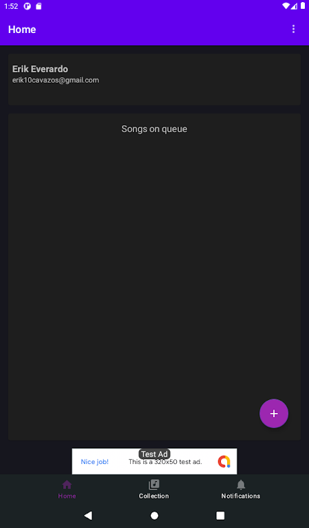
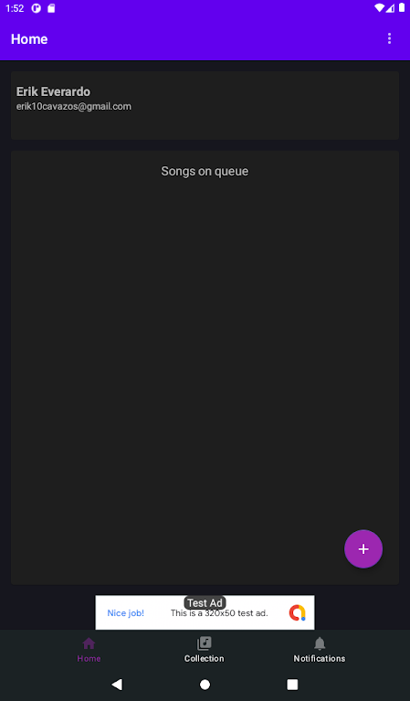

Resumen de Isolaatti
Introducción
Isolaatti es una aplicación cuyo objetivo es crear una comunidad para personas interesadas en la separación de instrumentos de canciones por medio de IA. Algunas de sus características son:
- Obtención de pistas instrumentales (bajo, percusiones y voces) utilizando demucs
- Mezclador de pistas en el navegador.
- Generación de proyectos.
- Creación de pistas propias con el micrófono.
- Comunidad estilo red social, que permite:
- Realizar publicaciones de texto simple
- Compartir proyectos para permitir cooperación (en desarrollo)
- Likes y comentarios
- Comentarios de audio (planeado)
- Trabajo colaborativo en tiempo real en el mezclador de pistas (planeado)
¿Cómo está hecho?
Isolaatti tiene varios componentes, que juntos forman un sistema un poco grande (solo un poco). Estos componentes incluyen lo necesario para hacer funcionar la aplicación web, la aplicación para Android, servidores de separación de pistas, almacenamiento. A continuación, detallo cada componente y cómo interactúan.
Api Web y base de datos
Esta es la parte que sustenta la aplicación en el servidor. Se utiliza ASP.NET Core y SQL Server 2019. Tanto la aplicación web como la de Android consumen esta API para recuperar datos de los usuarios registrados, así como guardar preferencias e información.
Para realizar consultas a la base de datos se utiliza Entity Framework, lo cual reduce el riesgo de fallos por hardcodear queries.
Aplicación web
La aplicación Web es "híbrida", o dicho de otro modo, la mayor parte del contenido es renderizado en el servidor y se envía el HTML al cliente (se utiliza Razor para esto), sin embargo, también se utiliza Vue.js para generar componentes en la interfaz gráfica de manera más dinámica. Por ejemplo, para mostrar el Feed.

Mezclador de Audio con Web Audio API (en desarrollo)
Isolaatti incluye un mezclador de audio, el cual permite, en primera instancia, manejar la ganancia y balance de las pistas (las generadas por demucs). Además, permitirá al usuario grabar pistas y agregarlas a la mezcla.
Se hace uso de API de Audio Web, lo cual permite de manera sencilla, agregar efectos de sonido, como ecualizador gráfico o reverb. Además de muchas otras cosas interesantes y divertidas, como visualizaciones en base al sonido.
El mezclador permite, como se puede observar, asignar colores a las pistas, colocarles un nombre. Además, ofrece un entorno simple y agradable para jugar con las pistas
Comunidad (en desarrollo)
Se cuenta con características sencillas de red social básica. Incluye cosas como: publicaciones con formato de texto avanzado, likes, comentarios (en forma de conversación o hilo), comentarios con audio y se trabaja en permitir compartir proyectos dentro de la misma aplicación para permitir colaboración.
Colaboración en tiempo real (etapa de planeación)
De esto no hay señales de existencia en la aplicación aun, sin embargo, se planea permitir la colaboración en tiempo real para modificar proyectos existentes (como lo que se puede hacer con Microsoft Word o Google Documents).
De esto se puede adelantar que se hará uso de Node.js y Socket.io.
Aplicación para Android
La aplicación de Android fue, de hecho, creada antes que la aplicación web, pero ahora se ha decidido dar más soporte a esta ultima; la razón es facilitar a todos los usuarios el acceso, además de más libertad al lanzar actualizaciones, las cuales pueden ser hechas al instante, y no se necesita que el usuario descargue nada. Lo anteriormente mencionado no quiere decir que no se planee continuar con el desarrollo de la app para Android.
Características actuales
La versión de Android está bastante desfasada respecto a su homónimo web, aun así es posible utilizarla si se desea. Sin embargo, dado su estado inmaduro, se encuentra en estado de pruebas internas, por lo que no es posible descargarla de Google Play Store (ni alguna otra tienda). Existen dos opciones para probar la aplicación para Android:
Descarga de APK
Esta es la forma más fácil, solo debes ir al repositorio de la aplicación y localizar el APK. Sin embargo, para algunos puede resultar confuso instalar manualmente APKs, por lo que es necesario revisar su dispositivo en busca de la opción correcta para permitir la instalación de APKs de fuentes desconocidas.
Programa de verificadores internos en Google Play Store
Está forma es un poco más laboriosa, pero podrá descargar la aplicación desde Google Play Store, disfrutando de las ventajas de las actualizaciones automáticas. Más información.
Capturas de pantalla
Solo como referencia, incluyo algunas capturas de pantalla.
 

Tome en cuenta que la aplicación de Android solo permite:
- Subir archivos de audio para ser procesados por demucs.
- Gestionar proyectos guardados
- Modificar el perfil
- Recibir notificaciones cuando un archivo (propio) haya sido procesado.
- Gestionar notificaciones
Por el momento, para acceder a todas las características, es necesario utilizar la versión web.
Servicio demucs y cola de procesamiento
Este servicio es la parte más cara de mantener, por lo que no está siempre disponible. Por el momento es una sola maquina, la cual está conectada al servidor principal y este le avisa cuando tenga algo que procesar. Últimamente se ha estado experimentando con múltiples instancias de este servicio, mediante virtualización, y los resultados han sido alentadores.
Almacenamiento de archivos
Este es el almacenamiento de las pistas producidas por demucs (el servicio mencionado anteriormente las deposita aquí) y demás archivos estáticos generados por los usuarios (como fotos de perfil, comentarios de audio, etc.) son almacenados en Google Cloud Storage. Este servicio es limitado (es gratuito), por lo que no se garantiza la disponibilidad a nivel masivo de usuarios.
Estar al tanto
Le recomiendo seguir la página de Isolaatti en Facebook, en ella se publican las nuevas características y se recibe retroalimentación.
Puede probar ahora la versión web visitando: https://isolaattiapi.azurewebsites.net/